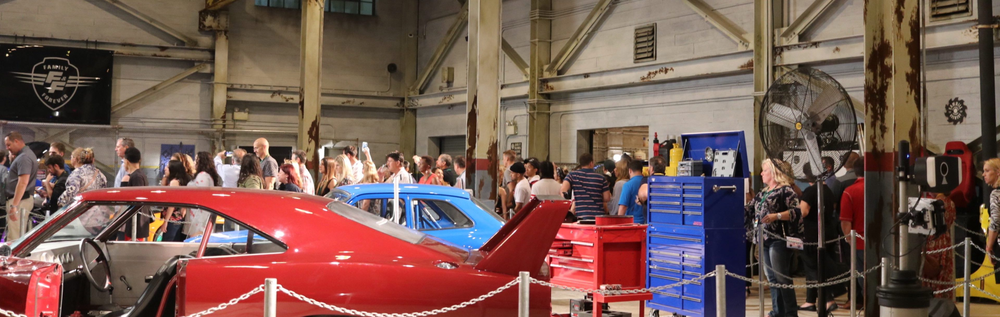
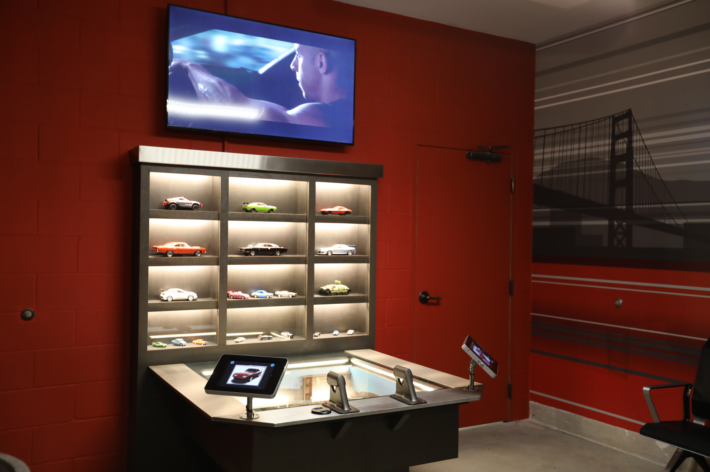

Fast & Furious Minigames
ROLE
UX Designer
TEAMED UP WITH
Lead Producer, Software Developer, 2D Artist
LOCATION
Orlando, FL
Brief
Design and develop games to increase the entertainment value and increase inclusitivity to the Fast & Furious: Supercharged attraction Family Waiting Room. My team was responsible for the tablet minigames.
TIMELINE
Feb 2017 - Apr 2017 (3 Months), Apr 2018 (Implementation+Launch)
Fast & Furious themed puzzle game in the attraction Family Waiting Room.
Challenge
How do we make the Family Waiting Room space more fun and still let waiting guests enjoy the attraction's story?
Solution
Implement themed physical and digital game options such as slot cars and tablet minigames usable by a large demographic.
Impact
The first Family Waiting Room of its kind with built-in interactivity, raising attraction accessibility and inclusion.

Queue for the Fast & Furious: Supercharged attraction, a ride themed around cars and racing.
Context
What Is A Family Waiting Room?
Besides seating and movie clips on loop, Family Waiting Rooms (also known as Child Swap Rooms) do not have much else to offer for those who most frequently occupy this space. They're pretty boring.
An attraction Family Waiting Room is a place for guests with small children, or anyone who cannot/does not want to ride, where one member of your party can wait with the little ones while the rest of your party rides. Once the main party finished riding, they may switch places so whoever rode can stay with the kids, and the adult(s) who sat out can then enjoy the ride.
Guests under a minimum height requirement cannot ride.
Guests who do not meet the accessibility requirements cannot ride.
Transformers: The Ride 3D Family Room
Men In Black: Alien Attack Family Room

Escape from Gringotts Family Room
approach
Goal: Make The Waiting Room Fun
Goal: Make The Waiting Room Fun
Guest Satisfaction (GSATs) is a system used to rate the success of our attractions and the theme park. Of the top 3 qualitative guest-voiced requests desired for the theme park, Family Rooms already succeeds in 2 categories - providing seating and air conditioning. The final request for 'more immersive environments' was the driving factor for this team when tasked to create a more fun and story-centric Family Waiting Room.
Goal: Make The Fun Easy To Access
We chose to create minigames due to their low barrier of entry and small learning curve because when guests reach the Family Waiting Room, they may have already been standing for 30+ minutes, potentially in high heat and humidity. Rides also have a relatively quick turn-around time, >10 minutes.
The Homescreen for the Fast & Furious Minigames.
process
Selecting 3 Games For The Product
Selecting 3 Games For The Product
3 concepts were selected for the final product: Tile Matching, Puzzle, and Coloring Book. Initially, a Simon Says game was also accepted but we eventually vetoed it in favor of polishing the other concepts due to schedule and budget constraints.
To arrive at our final concepts, we conducted preliminary research on tablet games and brainstormed ideas. We grouped similar categories, ranked them according to trends within the targeted 3-5 year old age range, and parsed down to the final game concepts.
Details of each game were written out into a game design document and reviewed before entering production.
UX Design
I drew different iterations of the UX flow. The final version met our goal to streamline getting to the game as fast as possible. One tap enters the selected experience.
Early flow diagram for F&F Minigames.
We leveraged iconography and animations to communicate each experience while using minimal text. Larger element sizes helped to limit errors choosing which game to play, especially if the user is a child. We used approved Fast & Furious imagery to adhere to the storytelling of the attraction.

Home Screen Animations and Single Tap into Game.
One of the constraints developing the coloring game was the requirement to use assets provided by the Fast & Furious intellectual property that had very detailed outlines tough to fill with color via tap.
1. Tapping an area filled in that section with highlited color
2. Active color is highlighted, previously the active crayon would be elevated compared to the rest but traded off for a larger image display area
3. High detail areas were reworked so that they could still be colored with ease and left no white space unable to be colored
4. Undo button undid the last interaction performed, colors could also be overridden by selecting a different color and tapping the same area
5. Back button to the main menu, upon return to the same game the game will be reset
Physical Installation
The Fast & Furious: Supercharged ride opened about a year after developing the games, but my teammate and I were lucky enough to get to install the tablet into its final casing.
Installation of the tablet into the Family Waiting Room.
This is the first Family Waiting Room in Universal Orlando Resort to receive this level of theming and interactivity.
metrics
I Wish We Could Get Metrics
I Wish We Could Get Metrics
The Family Waiting Room is a very small part of the larger attraction that the Guest Satisfaction Surveys do not typically gather statistics for. As we create the platform for similar games in the future, I intend to include in the development (if possible) the ability to add tags for data tracking without the need to consult external user research groups after a product is live.
impact
Expansion to Other Attractions
Expansion to Other Attractions
Family Waiting Rooms can be overlooked or rank low in priority when a project team designs an attraction. I was delighted to join this project in particular to advocate a more inclusive experience for those who may not have the ability to access particular attractions.
The minigames were developed with a framework and documented for expanding the platform future Family Waiting Rooms. I have already worked with attraction design teams who now design with more consideration for this space.